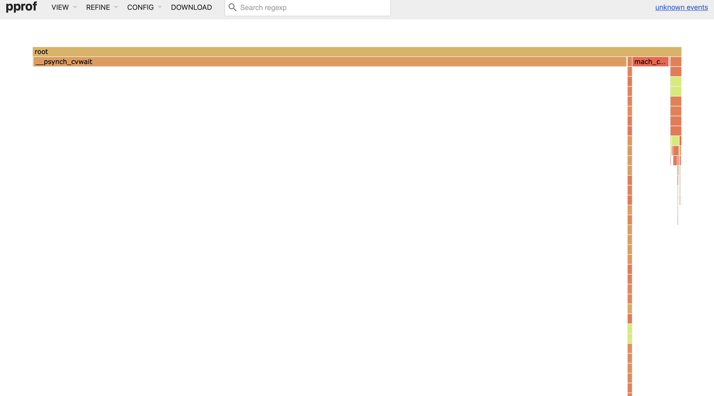
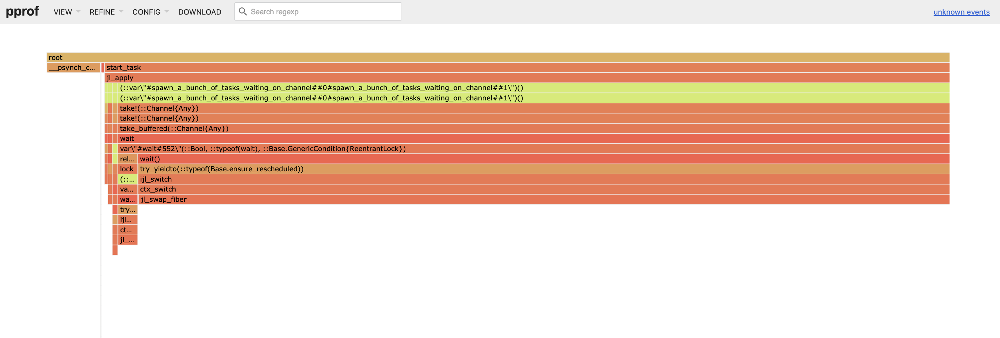
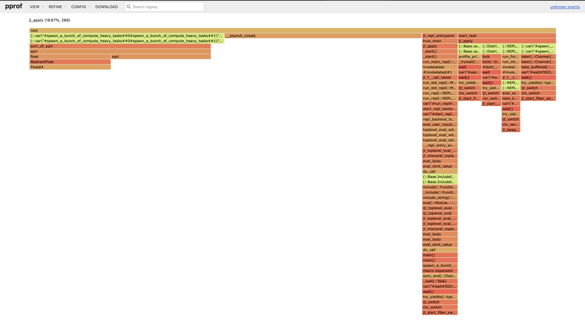
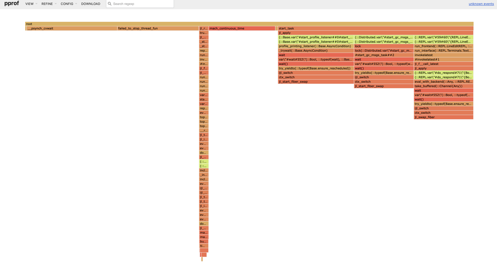

Profiling
Profile モジュールは、開発者がコードのパフォーマンスを改善するためのツールを提供します。実行中のコードを計測し、個々の行にどれだけ時間がかかっているかを把握するのに役立つ結果を出力します。最も一般的な用途は、最適化の対象となる「ボトルネック」を特定することです。
Profile は、「サンプリング」方式、または statistical profiler と呼ばれる方式を実装しています。タスクの実行中に、定期的にバックトレースを取得する仕組みです。各バックトレースには、現在実行中の関数と行番号に加え、その行に至るまでの関数呼び出しの完全な連鎖が記録されます。そのため、バックトレースは実行状態の「スナップショット」といえます。
実行時間の多くを特定のコード行の実行に費やしている場合、その行はすべてのバックトレースの中に頻繁に現れます。つまり、ある行の「コスト」、より正確にはその行までの関数呼び出しの連鎖全体のコストは、すべてのバックトレースにその行が現れる頻度に比例します。
サンプリングプロファイラでは、行ごとの完全な網羅はできません。バックトレースは一定の間隔で取得されるためです（デフォルトでは Unix システムで 1 ms、Windows で 10 ms ですが、実際のスケジューリング間隔はオペレーティングシステムの負荷にも左右されます）。また、後述するように、実行中のすべての地点のうち一部だけからサンプルを取得するため、サンプリングプロファイラで収集したデータには統計的なノイズが含まれます。
こうした制約はあるものの、サンプリングプロファイラには大きな利点があります。
- 実行時間を計測するために、コードを変更する必要はありません。
- Julia のコアコードに加え、オプションで C や Fortran のライブラリもプロファイルできます。
- サンプリングの頻度が低いため、パフォーマンスへの影響はごくわずかです。プロファイル中も、コードはほぼネイティブ速度で実行できます。
こうした理由から、ほかの方法を検討する前に、まず組み込みのサンプリングプロファイラを試すことをおすすめします。
Basic usage
簡単なテストケースを使ってみましょう。
julia> function myfunc()
A = rand(200, 200, 400)
maximum(A)
endJulia の JIT コンパイラをプロファイルする場合を除き、プロファイル対象のコードは、少なくとも一度は先に実行しておくとよいでしょう。
julia> myfunc() # run once to force compilationこれで、この関数をプロファイルする準備ができました。
julia> using Profile
julia> @profile myfunc()プロファイル結果を確認するには、いくつかのグラフィカルなビューアを利用できます。可視化ツールの「ファミリー」の一つは FlameGraphs.jl をベースとしており、各ツールがそれぞれ異なるユーザーインターフェースを提供しています。
- VS Code は、プロファイルの可視化機能を内蔵したフル機能の IDE です。
- ProfileView.jl は、GTK ベースのスタンドアロン型ビューアです。
- ProfileVega.jl は VegaLight を使用し、Jupyter ノートブックとの連携に優れています。
- StatProfilerHTML.jl は HTML を生成し、追加のサマリーも表示します。また、Jupyter ノートブックとの連携にも優れています。
- ProfileSVG.jl は SVG を描画します。
- PProf.jl は、グラフやフレームグラフなどを調べるためのローカルウェブサイトを提供します。
- ProfileCanvas.jl は HTML canvas ベースのプロファイルビューア UI です。Julia VS Code extension で使用されますが、インタラクティブな HTML ファイルの生成にも使えます。
プロファイルを可視化する方法として、これらとは独立した PProf.jl もあります。これは外部ツールの pprof を使用します。
ここでは、標準ライブラリに付属するテキスト形式の表示を使います。
julia> Profile.print()
80 ./event.jl:73; (::Base.REPL.##1#2{Base.REPL.REPLBackend})()
80 ./REPL.jl:97; macro expansion
80 ./REPL.jl:66; eval_user_input(::Any, ::Base.REPL.REPLBackend)
80 ./boot.jl:235; eval(::Module, ::Any)
80 ./<missing>:?; anonymous
80 ./profile.jl:23; macro expansion
52 ./REPL[1]:2; myfunc()
38 ./random.jl:431; rand!(::MersenneTwister, ::Array{Float64,3}, ::Int64, ::Type{B...
38 ./dSFMT.jl:84; dsfmt_fill_array_close_open!(::Base.dSFMT.DSFMT_state, ::Ptr{F...
14 ./random.jl:278; rand
14 ./random.jl:277; rand
14 ./random.jl:366; rand
14 ./random.jl:369; rand
28 ./REPL[1]:3; myfunc()
28 ./reduce.jl:270; _mapreduce(::Base.#identity, ::Base.#scalarmax, ::IndexLinear,...
3 ./reduce.jl:426; mapreduce_impl(::Base.#identity, ::Base.#scalarmax, ::Array{F...
25 ./reduce.jl:428; mapreduce_impl(::Base.#identity, ::Base.#scalarmax, ::Array{F...この表示の各行は、コード内の特定の箇所（行番号）を表します。インデントは関数呼び出しの入れ子を示し、インデントが深い行ほど呼び出しの連鎖の深い位置にあります。各行の最初の「フィールド」は、その行、またはその行から呼び出された関数内で取得されたバックトレース（サンプル）の数です。2 番目のフィールドはファイル名と行番号、3 番目のフィールドは関数名です。Julia のコードが変更されると行番号も変わることがあるため、実際に例を追う場合は、自分で実行してみるのがよいでしょう。
この例では、最上位で呼び出された関数が event.jl ファイルにあることがわかります。これは Julia の起動時に REPL を実行する関数です。REPL.jl の 97 行目を見ると、ここで eval_user_input() 関数が呼び出されていることがわかります。この関数は REPL に入力した内容を評価します。今回は対話的に作業しているため、@profile myfunc() を入力したときにこれらの関数が呼び出されました。次の行は、@profile マクロ内で行われた処理を示しています。
最初の行を見ると、event.jl の 73 行目で 80 個のバックトレースが取得されています。しかし、この行自体の処理が「高コスト」だったわけではありません。3 行目を見ると、80 個すべてのバックトレースが、実際にはこの行から呼び出された eval_user_input の実行中に取得されたことがわかります。このように、実際に時間がかかっている処理を特定するには、呼び出しの連鎖をさらに詳しく調べる必要があります。
この出力で最初に「重要」な行は、次の行です。
52 ./REPL[1]:2; myfunc()REPL は、myfunc をファイルではなく REPL で定義したことを示しています。ファイルを使っていれば、ここにはファイル名が表示されます。[1] は、この REPL セッションで最初に評価された式が myfunc 関数だったことを示しています。myfunc() の 2 行目には rand の呼び出しがあり、この行で取得されたバックトレースは 80 個中 52 個でした。その下には、dSFMT.jl 内で dsfmt_fill_array_close_open! が呼び出されていることがわかります。
少し下を見ると、次のように表示されています。
28 ./REPL[1]:3; myfunc()myfunc の 3 行目には maximum の呼び出しがあり、この箇所で取得されたバックトレースは 80 個中 28 個でした。その下には、この入力データ型に対する maximum 関数内の時間のかかる処理を実行している、base/reduce.jl 内の具体的な箇所が表示されています。
全体として、乱数の生成には最大要素の検索のおよそ 2 倍のコストがかかると、ひとまず結論づけられます。サンプルをさらに収集すれば、この結果への確信度を高められます。
julia> @profile (for i = 1:100; myfunc(); end)
julia> Profile.print()
[....]
3821 ./REPL[1]:2; myfunc()
3511 ./random.jl:431; rand!(::MersenneTwister, ::Array{Float64,3}, ::Int64, ::Type...
3511 ./dSFMT.jl:84; dsfmt_fill_array_close_open!(::Base.dSFMT.DSFMT_state, ::Ptr...
310 ./random.jl:278; rand
[....]
2893 ./REPL[1]:3; myfunc()
2893 ./reduce.jl:270; _mapreduce(::Base.#identity, ::Base.#scalarmax, ::IndexLinea...
[....]一般に、ある行で N 個のサンプルを収集した場合、ほかのノイズ要因（コンピュータがほかのタスクでどれだけ忙しいかなど）がなければ、不確実性はおよそ sqrt(N) の程度になると考えられます。この規則の主な例外はガベージコレクションです。実行頻度は低いものの、発生するとかなりのコストがかかる傾向があります。（Julia のガベージコレクタは C で書かれているため、後述する C=true 出力モードや ProfileView.jl を使うと、こうしたイベントを検出できます。）
これはデフォルトの「ツリー」形式のダンプです。別の形式として、入れ子の構造に関係なくカウントを集計する「フラット」形式のダンプもあります。
julia> Profile.print(format=:flat)
Count File Line Function
6714 ./<missing> -1 anonymous
6714 ./REPL.jl 66 eval_user_input(::Any, ::Base.REPL.REPLBackend)
6714 ./REPL.jl 97 macro expansion
3821 ./REPL[1] 2 myfunc()
2893 ./REPL[1] 3 myfunc()
6714 ./REPL[7] 1 macro expansion
6714 ./boot.jl 235 eval(::Module, ::Any)
3511 ./dSFMT.jl 84 dsfmt_fill_array_close_open!(::Base.dSFMT.DSFMT_s...
6714 ./event.jl 73 (::Base.REPL.##1#2{Base.REPL.REPLBackend})()
6714 ./profile.jl 23 macro expansion
3511 ./random.jl 431 rand!(::MersenneTwister, ::Array{Float64,3}, ::In...
310 ./random.jl 277 rand
310 ./random.jl 278 rand
310 ./random.jl 366 rand
310 ./random.jl 369 rand
2893 ./reduce.jl 270 _mapreduce(::Base.#identity, ::Base.#scalarmax, :...
5 ./reduce.jl 420 mapreduce_impl(::Base.#identity, ::Base.#scalarma...
253 ./reduce.jl 426 mapreduce_impl(::Base.#identity, ::Base.#scalarma...
2592 ./reduce.jl 428 mapreduce_impl(::Base.#identity, ::Base.#scalarma...
43 ./reduce.jl 429 mapreduce_impl(::Base.#identity, ::Base.#scalarma...再帰を使うコードでは、子関数内の行のカウントが、バックトレースの総数を上回ることがあります。これは少しわかりにくいかもしれません。次の関数定義を考えてみましょう。
dumbsum(n::Integer) = n == 1 ? 1 : 1 + dumbsum(n-1)
dumbsum3() = dumbsum(3)dumbsum3 をプロファイルし、dumbsum(1) の実行中にバックトレースが取得されたとすると、バックトレースは次のようになります。
dumbsum3
dumbsum(3)
dumbsum(2)
dumbsum(1)その結果、親関数のカウントは 1 でも、この子関数のカウントは 3 になります。「ツリー」形式ならこの関係がより明確にわかるため、ほかの理由も含め、結果を確認する方法としておそらく最も便利です。
Accumulation and clearing
@profile の結果はバッファに蓄積されます。@profile を使って複数のコードを実行すると、Profile.print() にはそれらを合わせた結果が表示されます。これは非常に便利ですが、場合によっては結果をリセットして最初から始めたいこともあります。その場合は Profile.clear() を使います。
Options for controlling the display of profile results
Profile.print には、ここまで説明した以外にもオプションがあります。宣言全体を見てみましょう。
function print(io::IO = stdout, data = fetch(); kwargs...)まず位置引数 2 つを説明し、その後でキーワード引数を説明します。
io– 結果をバッファ（ファイルなど）に保存できます。デフォルトではstdout（コンソール）に出力します。data– 分析対象のデータです。デフォルトでは、事前に確保されたバッファからバックトレースを取り出すProfile.fetch()から取得します。たとえば、プロファイラ自体をプロファイルする場合は、次のようにします。data = copy(Profile.fetch()) Profile.clear() @profile Profile.print(stdout, data) # Prints the previous results Profile.print() # Prints results from Profile.print()
キーワード引数には、次のものを任意に組み合わせて指定できます。
format– 前述の引数です。ツリー構造を示すインデント付き（デフォルトの:tree）でバックトレースを出力するか、インデントなし（:flat）で出力するかを指定します。C–trueの場合、C および Fortran コードのバックトレースも表示します（通常は除外されます）。導入例をProfile.print(C = true)を指定して実行してみてください。ボトルネックの原因が Julia コードか C コードかを判断するうえで非常に役立ちます。また、C = trueを設定すると、入れ子構造がよりわかりやすくなりますが、プロファイルのダンプは長くなります。combine– 1 行に複数の処理が含まれることがあります。たとえば、s += A[i]には配列参照（A[i]）と加算処理の両方が含まれています。これらは生成された機械語コードでは別々の行に対応するため、この行のバックトレースでは異なるアドレスが 2 つ以上取得されることがあります。combine = trueはそれらをまとめます。通常はこちらが便利ですが、combine = falseを指定すれば、命令ポインタごとに個別の出力を生成できます。maxdepth–:tree形式で、maxdepthより深い位置にあるフレームを制限します。sortedby–:flat形式での並び順を指定します。:filefuncline（デフォルト）はソース行でソートし、:countは収集したサンプル数の順にソートします。noisefloor– サンプルのヒューリスティックなノイズフロアを下回るフレームを制限します（:tree形式にのみ適用されます）。試す値としては 2.0 が推奨されます（デフォルトは 0）。このパラメータを指定すると、n <= noisefloor * √Nとなるサンプルが非表示になります。ここで、nはこの行のサンプル数、Nは呼び出し先のサンプル数です。mincount– 出現回数がmincount未満のフレームを制限します。
ファイル名や関数名は（... を付けて）途中で切り詰められることがあります。また、インデントも先頭に +n を付けて切り詰められます。これは、スペースを追加する余地があった場合に挿入されていた追加スペースの数を n で示します。深くネストしたコードのプロファイル全体を確認したい場合は、幅の広い displaysize を指定して IOContext に保存するとよいでしょう。
open("/tmp/prof.txt", "w") do s
Profile.print(IOContext(s, :displaysize => (24, 500)))
endConfiguration
@profile はバックトレースを蓄積するだけで、分析は Profile.print() を呼び出したときに行われます。長時間実行される計算では、バックトレースを保存するために事前確保されたバッファがいっぱいになることがあります。その場合、計算は続行されますが、バックトレースの取得は停止します。その結果、重要なプロファイルデータを取り逃す可能性があります（バッファがいっぱいになると警告が表示されます）。
関連するパラメータは、次のように取得・設定できます。
Profile.init() # returns the current settings
Profile.init(n = 10^7, delay = 0.01)n は保存できる命令ポインタの総数で、デフォルト値は 10^6 です。一般的なバックトレースが命令ポインタ 20 個分だとすると、50,000 個のバックトレースを収集でき、統計的な不確実性は 1% 未満になると考えられます。多くの用途では、これで十分でしょう。
そのため、変更が必要になる可能性が高いのは、秒単位で指定する delay です。この値は、要求された計算を実行するために、スナップショット間で Julia に与える時間を設定します。非常に長時間実行されるジョブでは、バックトレースを頻繁に取得する必要はないかもしれません。デフォルト値は delay = 0.001 です。もちろん、間隔を短くすることも長くすることもできます。ただし、間隔がバックトレースの取得にかかる時間（筆者のノート PC では約 30 マイクロ秒）に近づくと、プロファイリングのオーバーヘッドが大きくなります。
Wall-time Profiler
Introduction & Problem Motivation
前のセクションで説明したプロファイラは、サンプリング方式の CPU プロファイラです。大まかにいうと、Julia のすべての計算スレッドを定期的に停止してバックトレースを収集し、各関数のフレームを含むバックトレースのサンプル数に基づいて、その関数の実行時間を推定します。ただし、プロファイラがスレッドを停止する直前にシステムスレッド上で実行中だったタスクだけが、バックトレースの収集対象になります。
このプロファイラは、タスクの大半が計算処理に時間を費やすワークロードには適しています。一方、ほとんどのタスクが I/O 待ちのシステムや、コード内の同期プリミティブに対する競合を診断する用途には、あまり役立ちません。
次の簡単なワークロードを考えてみましょう。
using Base.Threads
using Profile
using PProf
ch = Channel(1)
const N_SPAWNED_TASKS = (1 << 10)
const WAIT_TIME_NS = 10_000_000
function spawn_a_bunch_of_tasks_waiting_on_channel()
for i in 1:N_SPAWNED_TASKS
Threads.@spawn begin
take!(ch)
end
end
end
function busywait()
t0 = time_ns()
while true
if time_ns() - t0 > WAIT_TIME_NS
break
end
end
end
function main()
spawn_a_bunch_of_tasks_waiting_on_channel()
for i in 1:N_SPAWNED_TASKS
put!(ch, i)
busywait()
end
end
Profile.@profile main()ここでは、ch チャネルで競合が発生しているか、つまり、チャネルに投入される作業項目の速度に対して待機中のタスクが過剰になっていないかを検出することが目的です。
これを実行すると、次の PProf フレームグラフが得られます。

このプロファイルからは、システムの同期プリミティブで競合が発生している箇所を特定するための情報は得られません。チャネルで待機しているタスクはブロックされ、スケジュール対象から外れます。つまり、それらのタスクに割り当てられた処理を実行するシステムスレッドがなくなるため、プロファイラのサンプル対象になりません。
Wall-time Profiler
スレッドをサンプリングする方式では、実行中のタスクしかサンプリングできません。一方、ウォールタイムタスクプロファイラは、スケジューリング状態に関係なくタスクをサンプリングします。たとえば、プロファイラの実行時に同期プリミティブ上でスリープしているタスクも、バックトレースの取得を試みた時点で実行中だったタスクと同じ確率でサンプリングされます。
この方法を使えば、上の例のように ch チャネルでブロックされているタスクのバックトレースも、プロファイルに含められます。
同じ例を、今度はウォールタイムプロファイラで実行してみましょう。
using Base.Threads
using Profile
using PProf
ch = Channel(1)
const N_SPAWNED_TASKS = (1 << 10)
const WAIT_TIME_NS = 10_000_000
function spawn_a_bunch_of_tasks_waiting_on_channel()
for i in 1:N_SPAWNED_TASKS
Threads.@spawn begin
take!(ch)
end
end
end
function busywait()
t0 = time_ns()
while true
if time_ns() - t0 > WAIT_TIME_NS
break
end
end
end
function main()
spawn_a_bunch_of_tasks_waiting_on_channel()
for i in 1:N_SPAWNED_TASKS
put!(ch, i)
busywait()
end
end
Profile.@profile_walltime main()次のフレームグラフが得られます。

サンプルの多くがチャネル関連の take! 関数から取得されていることがわかります。これにより、ch で待機中のタスクが実際に過剰であると判断できます。
A Compute-Bound Workload
ウォールタイムプロファイラは、実行中のタスクだけでなくシステム内のすべての生存タスクをサンプリングします。そのため、コードが計算処理中心の場合でも、パフォーマンス上のホットスポットを特定するのに役立ちます。簡単な例を見てみましょう。
using Base.Threads
using Profile
using PProf
ch = Channel(1)
const MAX_ITERS = (1 << 22)
const N_TASKS = (1 << 12)
function spawn_a_task_waiting_on_channel()
Threads.@spawn begin
take!(ch)
end
end
function sum_of_sqrt()
sum_of_sqrt = 0.0
for i in 1:MAX_ITERS
sum_of_sqrt += sqrt(i)
end
return sum_of_sqrt
end
function spawn_a_bunch_of_compute_heavy_tasks()
Threads.@sync begin
for i in 1:N_TASKS
Threads.@spawn begin
sum_of_sqrt()
end
end
end
end
function main()
spawn_a_task_waiting_on_channel()
spawn_a_bunch_of_compute_heavy_tasks()
end
Profile.@profile_walltime main()ウォールタイムプロファイルを収集すると、次のフレームグラフが得られます。

サンプルの多くに sum_of_sqrt が含まれていることに注目してください。これは、この例でコストの高い計算を行う関数です。
Identifying Task Sampling Failures in your Profile
現在の実装では、ウォールタイムプロファイラは、前回のガベージコレクション以降ずっと生存しているタスクと、それ以降に作成されたタスクをサンプリングしようとします。ただし、ほとんどのタスクが極めて短命な場合、すでに終了したタスクをサンプリングしようとして、バックトレースを取得できないことがあります。
failed_to_sample_task_fun または failed_to_stop_thread_fun を含むサンプルが見つかった場合、短命なタスクが大量にあり、そのバックトレースを収集できなかった可能性が高いと考えられます。
次の簡単な例を考えてみましょう。
using Base.Threads
using Profile
using PProf
const N_SPAWNED_TASKS = (1 << 16)
const WAIT_TIME_NS = 100_000
function spawn_a_bunch_of_short_lived_tasks()
for i in 1:N_SPAWNED_TASKS
Threads.@spawn begin
# Do nothing
end
end
end
function busywait()
t0 = time_ns()
while true
if time_ns() - t0 > WAIT_TIME_NS
break
end
end
end
function main()
GC.enable(false)
spawn_a_bunch_of_short_lived_tasks()
for i in 1:N_SPAWNED_TASKS
busywait()
end
GC.enable(true)
end
Profile.@profile_walltime main()spawn_a_bunch_of_short_lived_tasks で生成されるタスクは、非常に短命であることに注目してください。これらのタスクがシステム内の大半を占めるため、サンプリング対象となったタスクの多くでバックトレースを取得できない可能性があります。
ウォールタイムプロファイルを収集すると、次のフレームグラフが得られます。

failed_to_stop_thread_fun からのサンプルが多数あることから、システム内に短命なタスクが大量に存在することがわかります。
Memory allocation analysis
パフォーマンスを改善するための最も一般的な手法の一つは、メモリ割り当てを減らすことです。Julia には、これを計測するためのツールがいくつか用意されています。
@time
割り当ての総量は @time、@allocated、@allocations で計測できます。また、割り当てを引き起こす具体的な行は、その行が発生させるガベージコレクションのコストをプロファイリングすることで、多くの場合推定できます。ただし、コードの各行が割り当てるメモリ量を直接計測したほうが効率的な場合もあります。
GC Logging
@time は、式の評価中におけるメモリ使用量やガベージコレクションの概要を記録します。これに加えて、ガベージコレクションがどのくらいの頻度で実行されるか、毎回どれくらいの時間がかかるか、どれだけのガベージを回収するかを直感的に把握するために、各ガベージコレクションイベントを記録すると便利な場合があります。GC.enable_logging(true) を有効にすると、ガベージコレクションが発生するたびに Julia が stderr にログを出力します。
Allocation Profiler
割り当てプロファイラは、実行中に各割り当てのスタックトレース、型、サイズを記録します。Profile.Allocs.@profile で実行できます。
割り当てに関する情報は、Alloc オブジェクトの配列として返され、AllocResults オブジェクトに格納されます。現時点では、割り当ての多い呼び出しスタックを可視化できる PProf.jl と ProfileCanvas.jl パッケージを使うのが、これらの結果を可視化する最善の方法です。
割り当てプロファイラには大きなオーバーヘッドがあります。そのため、sample_rate 引数を指定すると、一部の割り当てをスキップして処理を高速化できます。sample_rate=1.0 を指定するとすべてを記録します（低速です）。sample_rate=0.1 では割り当ての 10% だけを記録するため、より高速になります。
古いバージョンの Julia では、すべてのケースで型を取得できるわけではありませんでした。古いバージョンで型が Profile.Allocs.UnknownType の割り当てが表示された場合、プロファイラが割り当てられたオブジェクトの型を特定できなかったことを意味します。これは主に、コンパイラが生成したコードによる割り当てで発生していました。詳しくは issue #43688 を参照してください。
Julia 1.11 以降では、すべての割り当てについて型が報告されるはずです。
このツールの使い方について詳しくは、the talk from JuliaCon 2022 を参照してください。
Allocation Profiler Example
この簡単な例では、PProf を使って割り当てプロファイルを可視化します。別の可視化ツールを使ってもかまいません。サンプルレートを指定してプロファイルを収集し、その後で可視化します。
using Profile, PProf
Profile.Allocs.clear()
Profile.Allocs.@profile sample_rate=0.0001 my_function()
PProf.Allocs.pprof()次は、サンプルレートの調整方法を示す、より詳しい例です。目安となるサンプル数は 1,000～10,000 程度です。多すぎるとプロファイルビューアの処理能力を超えることがあり、プロファイリングも遅くなります。少なすぎると、代表性のあるサンプルが得られません。
julia> import Profile
julia> @time my_function() # Estimate allocations from a (second-run) of the function
0.110018 seconds (1.50 M allocations: 58.725 MiB, 17.17% gc time)
500000
julia> Profile.Allocs.clear()
julia> Profile.Allocs.@profile sample_rate=0.001 begin # 1.5 M * 0.001 = ~1.5K allocs.
my_function()
end
500000
julia> prof = Profile.Allocs.fetch(); # If you want, you can also manually inspect the results.
julia> length(prof.allocs) # Confirm we have expected number of allocations.
1515
julia> using PProf # Now, visualize with an external tool, like PProf or ProfileCanvas.
julia> PProf.Allocs.pprof(prof; from_c=false) # You can optionally pass in a previously fetched profile result.
Analyzing 1515 allocation samples... 100%|████████████████████████████████| Time: 0:00:00
Main binary filename not available.
Serving web UI on http://localhost:62261
"alloc-profile.pb.gz"その後、http://localhost:62261, にアクセスするとプロファイルを表示できます。プロファイルはディスクにも保存されます。ほかのオプションについては PProf パッケージを参照してください。
Allocation Profiling Tips
前述のとおり、プロファイルのサンプル数は 1,000～10,000 程度を目安にしてください。
サンプルは、割り当てのサイズで重み付けせず、すべての割り当てを対象に一様に抽出されます。そのため、sample_rate=1 を設定していない場合、割り当てプロファイルが、プログラム内で最も多くのバイト数を割り当てている箇所を代表しているとは限りません。
割り当ては、ユーザーがオブジェクトを直接生成することで発生する場合もあれば、ランタイム内部で発生したり、型の不安定性に対処するためにコンパイル済みコードへ挿入されたりする場合もあります。「ソースコード」ビューを確認すると、こうした割り当ての発生箇所を特定しやすくなります。また、割り当ての原因を特定するには、Cthulhu.jl などの外部ツールも役立ちます。
Allocation Profile Visualization Tools
現在、割り当てプロファイルを表示できる可視化ツールはいくつかあります。主なものを以下に挙げます。
VSCode に組み込まれているプロファイルビューア（
@profview_allocs）[ドキュメントが必要]REPL で結果を直接表示する
Profile.Allocs.fetch()を使うと、各割り当てのスタックトレースと型を REPL で確認できます。
Line-by-Line Allocation Tracking
割り当てを計測する別の方法として、--track-allocation=<setting> コマンドラインオプションを指定して Julia を起動する方法があります。このオプションには、none（デフォルト。割り当てを計測しない）、user（Julia のコアコードを除くすべての箇所でメモリ割り当てを計測する）、all（Julia コードの各行でメモリ割り当てを計測する）を指定できます。割り当ては、コンパイル済みコードの各行について計測されます。Julia を終了すると、累積結果が、ファイル名の末尾に .mem を付けたテキストファイルとして、ソースファイルと同じディレクトリに書き込まれます。各行には、割り当てられたバイト数の合計が記録されます。Coverage package には、割り当てバイト数の順に行を並べ替えるなど、基本的な分析ツールが用意されています。
結果を解釈する際には、いくつか重要な点があります。user の設定では、REPL から直接呼び出された関数の先頭行に、REPL コード自体で発生したイベントによる割り当ても計上されます。さらに重要なのは、JIT コンパイルも割り当て数に加算されることです。Julia のコンパイラの多くは Julia で書かれており、コンパイルには通常メモリ割り当てが必要だからです。推奨される手順は、分析したいコマンドをすべて実行してコンパイルを済ませた後、Profile.clear_malloc_data() を呼び出して割り当てカウンタをすべてリセットすることです。その後、対象のコマンドを実行し、Julia を終了すると .mem ファイルが生成されます。
--track-allocation は割り当てを記録するためにコード生成の方法を変更するため、このオプションを使わない場合とは割り当ての状況が異なる可能性があります。代わりに allocation profiler を使うことをおすすめします。
External Profiling
現在、Julia は外部プロファイリングツールとして Intel VTune、OProfile、perf をサポートしています。
選択したツールに応じて、Make.user で USE_INTEL_JITEVENTS、USE_OPROFILE_JITEVENTS、USE_PERF_JITEVENTS を 1 に設定してコンパイルします。複数のフラグを指定できます。
Julia を実行する前に、環境変数 ENABLE_JITPROFILING を 1 に設定してください。
これで、さまざまな方法でこれらのツールを利用できます。たとえば、OProfile では、次のように簡単な記録を試せます。
>ENABLE_JITPROFILING=1 sudo operf -Vdebug ./julia test/fastmath.jl
>opreport -l `which ./julia`同様に、perf では次のようにします。
$ ENABLE_JITPROFILING=1 perf record -o /tmp/perf.data --call-graph dwarf -k 1 ./julia /test/fastmath.jl
$ perf inject --jit --input /tmp/perf.data --output /tmp/perf-jit.data
$ perf report --call-graph -G -i /tmp/perf-jit.dataプログラムについて計測できる項目はほかにもたくさんあります。網羅的な一覧については、Linux perf examples page を参照してください。
perf は実行ごとに perf.data ファイルを保存します。このファイルは、小さなプログラムでもかなり大きくなることがあります。また、perf の LLVM モジュールは ~/.debug/jit にデバッグ用オブジェクトを一時保存するため、このフォルダは定期的に削除してください。